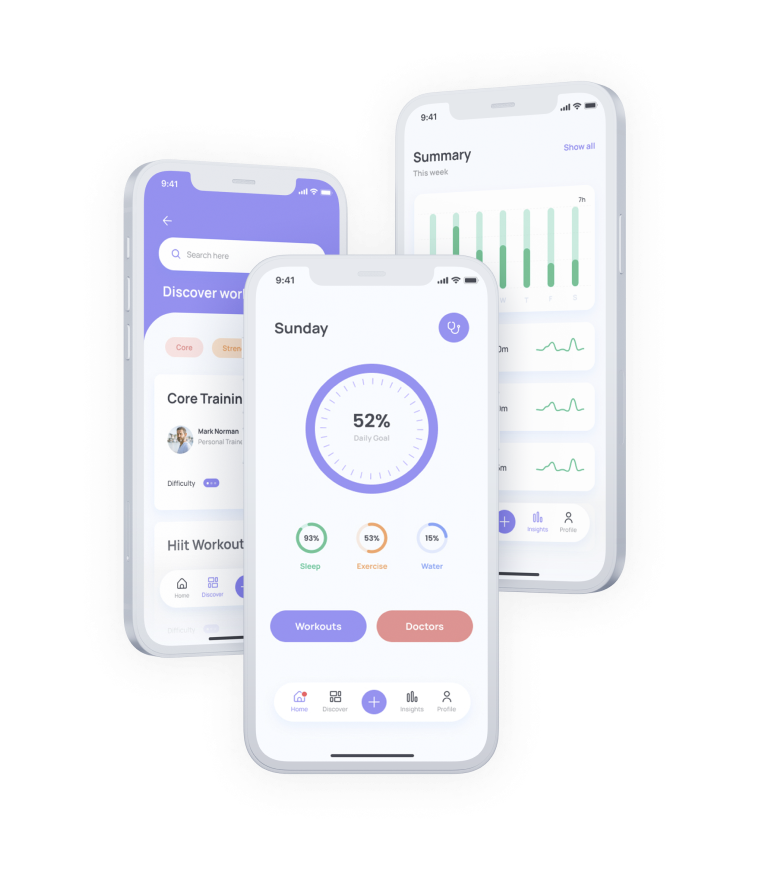
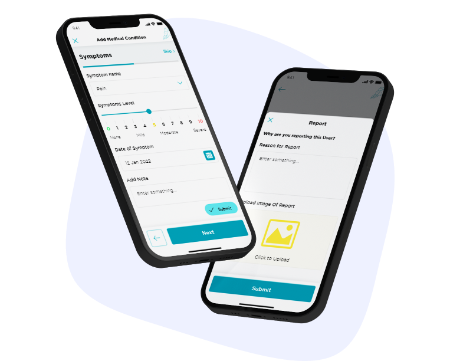
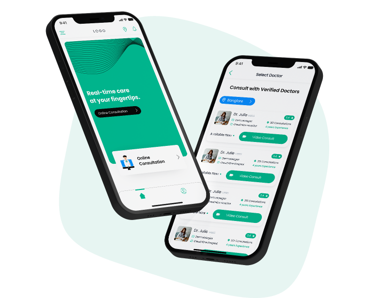

Hi! I'm Nat,Senior Product Designer
With 10 years of experience in crafting user-centered digital solutions, I specialize in transforming complex problems into intuitive, engaging experiences. I am passionate about bridging the gap between technology and people to create impactful, accessible solutions that drive success and growth for both users and businesses.
Ready to elevate your product's user experience with solutions that truly resonate?
As a Senior Product Designer, I transform user insights into powerful digital solutions that not only elevate your product’s experience but also make technology more accessible and human-centered.
My work- concept development
- ·
- prototyping
- ·
- interface design
- ·
- user experience
- ·
- testing and validation
- ·
- user research
- ·
- design systems
- ·
- remote collaboration
Featured work
-

Mobile App Audit & Redesign Proposal
UI Design - 2025In today's digital landscape, user experience (UX) and user interface (UI) design play a crucial role in the success of mobile applications. A well-designed app not only enhances usability but also drives user engagement and conversion rates. This case study focuses on a comprehensive audit and redesign proposal for YourHealthyDay, a [Industry, e.g., FinTech, Health, E-commerce] application. By identifying key usability issues and implementing targeted design improvements, we aim to create a seamless and accessible user experience.
Read more -

Website Redesign for an E-Commerce Platform
UX/UI Design - 2024With increasing bounce rates and declining conversions, AllDiscountsNearby faced challenges in user engagement and checkout completion. Our audit revealed a cluttered homepage, a confusing navigation structure, and a checkout process with unnecessary friction. Through a redesign focused on simplified navigation, clear call-to-action buttons, and a more intuitive checkout flow, we enhanced the user experience. The updated design featured a cleaner UI, improved product categorization, and an express checkout option. Post-redesign analytics showed a 25% decrease in cart abandonment and a 40% increase in completed purchases, validating the impact of UX optimization.
Read more -

Improving Feature Discoverability in a SaaS Dashboard
User Research - 2025DataMagician provides powerful analytics tools, but user feedback indicated that many essential features were underutilized due to poor discoverability. Our research found that hidden menus, lack of onboarding guidance, and an overwhelming interface led to confusion. To address this, we redesigned the dashboard layout with contextual tooltips, an improved search function, and a guided onboarding experience. The addition of an "Explore Features" section increased user adoption of key tools by 60%, while the updated navigation significantly reduced task completion times. These enhancements ensured that users could quickly access and leverage the platform’s full capabilities without frustration.
Read more -
There's more to see! Check the work I'm most proud of here.
Curious about how I blend creativity with strategy to craft impactful digital solutions?
Dive into my journey, values and approach to design. Learn More about what drives me and how I bring technology closer to people.
About meThanks for stopping by!
Feel free to download my resume or check out my LinkedIn profile—I'd love to connect. If you have any questions or just want to talk about bridging the gap between people and technology, shoot me an email.